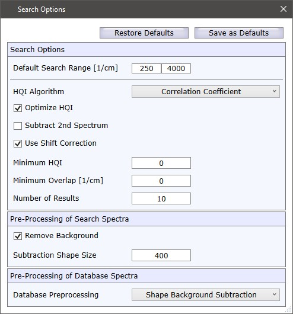

|
搜索选项
|

搜索选项
默认搜索范围
定义搜索的默认掩膜区域。您可以在图形查看器中操作掩膜，以定义光谱的哪部分应用于数据库比较。
HQI算法
定义光谱比较的方式：
参见 检测算法
优化HQI
改善噪声光谱上的HQI。
减去第二光谱
使用2组分或3组分搜索时，从第一个光谱中减去第二光谱。例如，从感兴趣的材料中减去基底，从而减少基底对HQI的影响。
使用偏移校正
如果选中，搜索光谱在±10 [1/cm]范围内移动以获得最佳数据库匹配。搜索后，最佳匹配的偏移显示在搜索选项卡的"选定结果"区域中。
最低HQI
过滤结果（仅显示具有最低HQI的结果）。
最低重叠
过滤结果（仅计算和显示具有最低重叠的结果）。
结果数量
定义显示的结果数量。
搜索光谱的预处理
定义未知光谱的预处理。
去除背景
如果选中，在搜索之前执行背景扣除。使用WITec Project形状算法进行扣除。
扣除形状大小
定义背景扣除的形状大小。较低的值将从峰中减去更多细节。
数据库光谱的预处理
定义数据库光谱在与未知光谱比较之前的预处理方式：
默认值
恢复默认
使用默认值并覆盖所有当前搜索选项。
保存为默认
将当前设置保存为将来搜索的默认值。